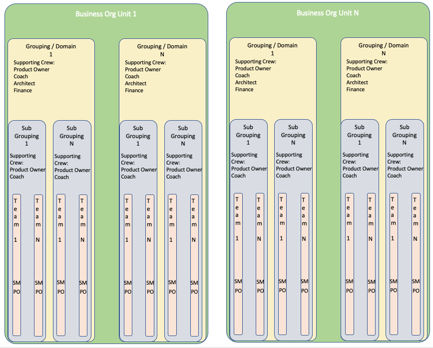

Demand Design Consideration and Concepts
Design Delivery structure
- Delivery Structure definition card
- Mission
- Strategic Priority
- Key Activities
- Not doing, out of scope
- Simplify delivery structure and empower people so that they can server the customer
- have collection of team alignment making it easier to know what work is being done where and by whom
- a Team or a collection of teams that are organisation around a deliverable value proposition outcome.

Considerations
- Try and keep structure as shallow as possible
- How to assess individuals to ensure they are in the right talent pools
- People maybe mapped such that there it is a new organisational structures/ change in line management/ role title or descriptions
- Time delays/needed if required for Human Resources consultation or contract re-negotiation time
- Leverage crowd sourcing and individuals to know if they believe they have ended in the wrong talent collective
- Updating Human Resources systems (workday, HRM, PEX, …)
· Chapter demand or Chapter assignment rate (how many people from chapter working in demand teams; how many working on consistent practices/CoE; how many "on bench")
· Chapter geographic view. Understand working hours and timezone, idea is that teams are in internally in a similar time zone. Geographic location will also affect demand on office infrastructure and factors of if/how a team could physically work together.
· Costs: chapter area, chapter
Establishing consistent practices across Supply - CoEs
· Supply to think of practices, and how they establish, communicate, and improve them. i.e COE
· There's a separate conversation about COEs. Here supply has to consider investment in internal practices, and the tradeoffs of this investment versus putting people directly in demand/teams. Particularly for high demand; the investment ROI tradeoff of improved practices/reduced impediments should mean that these COEs are higher value than the alternative work.
· Also ties into training/upskill.
· COE = demand structure. For visibility
Boundaries and Hybrids. Between new & existing ways of working
Way of working boundaries
Aka agile & not-agile. Transformed and not-yet-transformed.
· Interaction between new & existing way of working. Inevitably work will flow across this boundary.
· Have to consider how labour supply will work across these two models. The organization will not stop
· How does "new" request from "existing/old"
· How does "existing/old" request from new
· Tracking & reporting
Questions and things to Address Elsewhere or later
Maybe another page/chapter for these
Should Talent pools (Chapters) live
- with in a specific business unit
- whole of company (cross company all talent types)
- as a mix and what would the mix be
· Supply responsibility.
· Recruitment (incl working with recruiters, contractors, labour supply orgs, consultancies)
· career progression, training, upskill and reskill.
· Consistent practices.
· Exit from the organization. Due to drop in demand, and for disciplinary purposes.
- Who leads a chapter; and whether it is a full time job or if there's an expectation that a chapter lead will be "on the tools" also doing work.
- How these overarching types fit inside the existing organisation, particularly early on in a transformation. For example, the overarching talent type of full stack engineers could fit under an Engineering and Technology business unit, and marketing overarching talent types could fit under a Sales and Support business unit.
Frequent challenge is assessing skills. Similar role could do very well in one team, and very poorly in another – where demand is otherwise identical. Initial reaction is to rank and rate skill level, but challenge is then how to measure/rate. By education? By experience/context? Importance of chapter lead role, and comms between chapter lead and product owner to discover the person-role-fit
· Process for building/changing teams. Separate section
· Funding
· Artefacts
· Understanding of roles/skills in the organization.
· What supply looks like. Mapping from HRMS to Supply, where not 1:1
· Labour cost; either to the individual level (high precision, also high PII risk) or a useful aggregate (chapter area average, chapter average, chapter average x some other parameter like labour supply company|band|country)
· Costs: chapter area, chapter
Supply has to think of forward demand / forecast.
· How forecasting is collected, and at what level (specific individuals, or just numbers of people with a given skill), to what time horizon (month, quarter, year). Idea is to build a view of labour supply at a long enough timeframe to act
· Act, by recruitment / contract / labour supply. Build runway for increasing in-demand skills. Recruiting roles will take at least a month, timeframes of 3-6 months are common, more for highly specialized roles.
· Act, by upskill/re-train existing staff from supply/chapters with lower demand (where demand \< supply). Advantage of taking people that are already in the organization, have its context, and know its systems of work. Consider: individual willingness to re-train, and the time/money investment and checkpoints along the way.
· Together, the above creates tension and a damping/stabilizing force to idea of pivoting too often. The value of the forecast
Establishing consistent practices across Supply - CoEs
· Supply to think of practices, and how they establish, communicate, and improve them. i.e COE
· There's a separate conversation about COEs. Here supply has to consider investment in internal practices, and the tradeoffs of this investment versus putting people directly in demand/teams. Particularly for high demand; the investment ROI tradeoff of improved practices/reduced impediments should mean that these COEs are higher value than the alternative work.
· Also ties into training/upskill.
· COE = demand structure. For visibility
Hybrids
· Cases where one structure both Supplies and Demands labour.
· Usually the traditional/not-yet transformed part of the org. Because their structure and processes hasn't yet shifted to full supply/demand paradigm; but they still need to get work done
· They'll request people from Supply; and Demand areas will request from them.
· Picture and process of incremental change. No changing the whole org at once, yet provides early exposure
Usually the traditional/not-yet transformed part of the org. Because their structure and processes hasn't yet shifted to full supply/demand paradigm; but they still need to get work done.
As a result these teams (or projects!) are likely to be both
- supplying individuals to other parts of the organisation so they can complete their work, and
- requesting demand from other parts of the organisation so the hybrid/project can complete its work
Dont feel that these live in the supply chain side.
- creates excessive handoffs of work on customer value streams. Eg: product development -\> finance -\> product development -\> engineering -\> sales -\> support. In transforming our organisation, we design design our labour supply to group similar job roles and skills together into talent pools.
· Factors to consider: size, guidance chapter members will require on the job / not handled by demand side (product owner), time demands for the team building & adjustment process (launch, annual planning, quarterly planning)
Process of matching Supply to Demand + resolving contention
· Demand will put requests for roles in to Supply. Eg a team wants 2x software engineers, 1x risk expert, and 1x product owner. ideally at the chapter level else at chapter area. What will help this process:
· Key attributes. Eg experience with specific products, platforms. Knowledge of given processes, software programming languages. Certifications or education (external, or internal). Location. Planned leave.